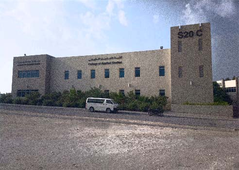

Applied Studies Headline
Dean's Message
It is my great pleasure and privilege to be part of the family of the College of Applied Studies (CAS). My first impression when I entered this college, I felt it as a place that is entrepreneurial, with a real team spirit and dedicated faculty and staff who work hard.
Let me start by wishing my colleagues as well as all the stakeholders the very best in what everybody does in promoting higher standards academically in the CAS and in particular the University of Bahrain and our beloved Kingdom. This can be seen when our students become high achievers, because high achievement is an indication of the quality of the work that is performed by all of us in a team spirited environment.
In this context, I would like to impress upon you that the mission of the CAS is about going the extra mile to ensure that our students graduate with the skills, aptitudes and characteristics that will make them into effective contributors to their professions. I'm very enthusiastic and honored to hold the position and look forward to putting plenty of energy into it and serve you!
The exchange of ideas and arguments among various committees, whether in the departmental level or the college level, can help us all learn at the substantive level. This would eventually promote the college according to his Royal highness Prince Salman Bin Hamad Al-Khalifa the founder of the Vision 2030 which is a comprehensive economic vision for the Kingdom of Bahrain providing a clear direction for the continued development of our economy through educational reform.
To conclude, it is my conviction that the synergy and dynamism of the faculty and staff in the college will definitely encourage a sustainable coexistence with our students and stakeholders alike whereby holding in the highest regard Vision 2030.
Sadiq Mahdi Al-Alawi
Dean of College of Applied Studies